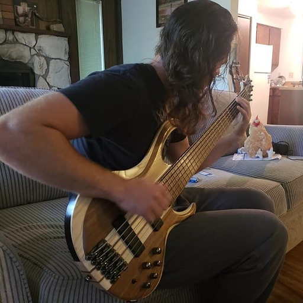
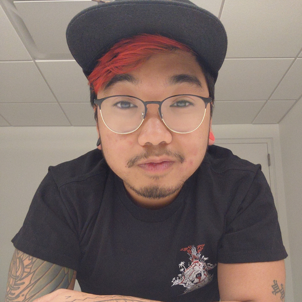

Charecter Creator
Home
Character Sheet
About The Team
About the team
Jason Taisey
Project Manager for two years
Problem solving mentality with a diverse capability of applying sensible design
Creative thinking mindset, without being dismissive of team criticism
Nicholas Cerillo
Graduated from University of Florida, but have been living in Washington since 2019
Worked as a junior software developer for about 2.5 years
After doing mostly support work, joined CF to get back into practice and seek more opportunities for developer roles.

Zach Hornung
Previous job was farming oysters
Want to get into Artificial Intelligence field
Experience working with disparate groups of people in challenging environments

Mason Aviles
6yrs of front end web development leveling up to application development
Destroyer of high scores
Work hard so I can play hard